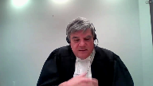
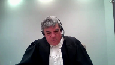
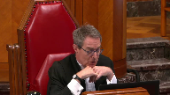
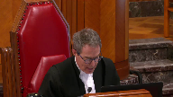

Co-operators General Insurance Company v. Sollio Groupe Coopératif (formerly known as La Coop Fédérée), et al.
This transcript was made with automated artificial intelligence models and its accuracy has not been verified. Review the original webcast here.
Speaker 1 (00:00:01): The court, la coup.
Justice Brown (00:00:31): Bonjour.
Justice Wagner (00:00:37): Dans la cause, la Compagnie d’assurance générale Co-operators contre Solio Groupe Coopératif, anciennement connu sous le nom de la coop fédérale.
Pour la plante, la Compagnie d’assurance générale Co-operators, M. Pierre Gourdeau, M. Émilie Deschênes.
Pour l’intimé, Solio Groupe Coopératif, anciennement connu sous le nom de la coop fédérée, M. Alain Detourneau et M. Sylvie Grenier.
Pour l’intimé, Banque nationale du Canada, M. Patrick Ouellet, M. Laurence Sainte-Marie.
Pour l’intervenant, Association des banquiers canadiens, M. Mathieu Lévesque.
M. Gourdeau, M. Deschênes.
Speaker 2 (00:01:20): Plais à la Cour, M. le jugeant-chef, mesdames et messieurs les juges.
Avant toute chose, au nom de notre cliente, je tiens à vous remercier de nous avoir invités à présenter nos arguments concernant la présente affaire à la plus haute instance judiciaire du pays.
Selon ce que j’en comprends, le fait que la demande d’autorisation ait été accueillie démontre que vous avez été convaincus de l’importance de l’affaire pour le public et des questions de droits qu’elle se lève.
Il n’y a aucun doute que la décision que vous allez rendre aura un effet sur chacun des clients de chacune des institutions financières au pays qui lui utilisent des transferts électroniques de fonds.
En fait, M. Gourdeau…
Justice Wagner (00:02:05): J’aimerais vous poser la question, c’est quoi les questions légales qui sont devant nous aujourd’hui?
Quels sont les enjeux?
Speaker 2 (00:02:13): En fait, c’est qui est le propriétaire d’une somme volée lorsqu’il y a transfert électronique de fonds fauduleux.
Overlapping speakers (00:02:24): C’est une question légale.
Speaker 2 (00:02:25): En fait, elle va en impliquer d’autres.
L’intention du client, nous allons vous soumettre que c’est la base, ça devrait être la base du système bancaire, mais essentiellement, effectivement ici, Co-operators est l’assureur d’hommage direct, je vais l’appeler Co-op fédéré, et nous, la question qui nous concerne
, c’est de savoir qui est le propriétaire des sommes volées.
Nous allons vous soumettre que le propriétaire des sommes volées n’était pas Co-op fédéré, mais était, au moment des incidents, la Banque nationale du Canada.
C’est la question que vous avez ultimement décidée.
Elle implique nécessairement que l’on analyse l’intention du client, victime de la fraude ici, nous évidemment on ne prend qu’ultimement que c’est la banque, mais l’intention du client dans le cadre d’une transaction survenue comme celle dans la présente instance.
Alors, au terme de notre présentation, j’espère que nous vous aurons convaincu que dans tous les cas où il y a un transfert électronique de fonds frauduleux, c’est toujours l’argent de la banque qui est volé.
Que le compte soit créditeur, comme le dit le juge Dufresne, ou que le compte soit débuteur.
J’espère que nous vous aurons convaincu que lorsqu’il y a une opération dans ces comptes, l’intention du client devant être considérée n’est pas celle qui est apparente ou strictement apparente, mais celle qui est réelle, celle qui reflète son véritable consentement préalable.
L’intention vraie du client doit être la pierre angulaire de notre système bancaire, non pas une intention qui n’a l’air que d’être vraie, comme ici le suggèrent les banquiers.
Finalement, j’espère que nous vous aurons convaincu qu’il n’y a aucune raison légale, sociale, économique ou autre pour laquelle les clients utilisant les transferts électroniques de fonds soient plus à risque que ceux utilisant des chèques.
Pour questions d’intendance, je réfère essentiellement dans ma présentation à notre mémoire ainsi qu’aux trois mémoires des autres parties et à l’onglet 6 de notre recueil condensé, c’est-à-dire des extraits de la décision rendue par la Cour d’appel du Québec.
Les faits du présent dossier sont simples.
Le 21 août 2014, un ordre de paiement a été complété dans les circonstances que l’on connaît et au sujet desquelles le juge Dufresne dit à la page 5 de notre mémoire, paragraphe 17, l’honorable juge Dufresne, après avoir cité l’exposé commun en entier, retient que « il est donc acquis aux procédures que l’ordre de paiement transmis par Mme Cadieux, qui occupait le poste de contrôleur sous les ordres du directeur exécutif Finances et administration de Coop fédéré, est le résultat des manœuvres dolosives des fraudeurs ».
C’est clair que son consentement a été vicié.
Que la deuxième signataire soit celle de Mme Joanne Gauthier a été manifestement contrefaite.
Dès le 23 août 2014, Paul Noiseux, vice-président Finances de Coop fédéré, transmet une demande demandant à la Banque nationale du Canada s’il est possible de bloquer le transfert de fonds.
Le même jour, Coop fédéré rapporte les événements à son assureur.
Le même jour, Coop fédéré loge une plainte au service de police de la Ville de Montréal.
Le 27 août 2014, Alain Garneau, vice-président Affaires juridiques, mandate la firme Navigan afin de faire une enquête sur un virement de fonds frauduleux.
Le 2 septembre 2014, Coop fédéré transmet une lettre à la Banque nationale du Canada que je me permets de vous lire au long.
Elle est à la page 1 de notre mémoire.
Paragraphe 3.
Messieurs, par la présente, la Coop fédéré avise Banque nationale du Canada qu’elle a été victime d’une fraude par transfert bancaire frauduleux.
Victime d’une fraude par transfert bancaire frauduleux.
Survenu le 21 août 2014 au montant de 5 millions, débitée illégalement.
Au paragraphe suivant, cette fraude a par ailleurs été dénoncée à votre banque par la Coop fédéré dès qu’elle en a pris connaissance, à savoir samedi matin
le 23 août.
Paragraphe suivant à la page 2.
Compte tenu des circonstances, faits et agissements de votre banque reliés à cette fraude, Coop fédéré conteste la validité du transfert bancaire frauduleux ainsi que celle du débit en résultant sur son compte au montant de 5 millions et demande à votre banque le remboursement de ce débit illégal.
Quelques mois plus tard, Coop fédéré institue une procédure judiciaire contre Co-operators pour fraude.
Nous vous soumettons que tous ces faits qui ne sont pas contestés démontrent clairement que Coop fédéré n’a jamais autorisé l’ordre de paiement, qu’elle n’a jamais voulu emprunter 5 millions de dollars sur sa marge de crédit et qu’elle n’a certainement jamais voulu transférer ces 7 sommes à des fraudeurs se trouvant vraisemblablement en Chine.
Plus clairement pour nous, Coop fédéré n’a jamais demandé à la Banque nationale du Canada qu’elle exécute l’ordre de paiement frauduleux.
Justice Côté (00:08:43): Alors, M. Gourdeau, pour vous, le document qui a été transmis par l’employé de Coop fédéré, ça ne représente pas aux yeux de la banque une demande de sa cliente de transférer les agents.
Non seulement ce document-là, mais également Coop a demandé qu’une confirmation soit transmise par la suite, une fois que le virement serait effectué.
Alors, pour vous, c’est inexistant?
Speaker 2 (00:09:12): En fait, l’ordre de paiement, c’est sûr qu’il a existé et Mme Caldieu l’a effectivement transmis.

Ce que nous vous soumettons, c’est que l’ordre de paiement, l’intention que vous devez considérer, en fait c’est sûr qu’on vous demande d’intégrer dans le système des ordres de paiement pour la somme de transfert électronique de fonds, la pensée de la Cour dans Teva et Beaumont.
Justice Côté (00:09:37): Mais Théva, c’était une décision basée uniquement sur la loi sur les lettres de change et c’était l’interprétation d’une disposition de la loi sur les lettres de change.
Ici, je ne crois pas que vous contestiez les motifs de la Cour d’appel à l’effet qu’ici, un ordre de virement bancaire, ça n’est pas une lettre de change, au sens où s’est définie la loi sur les lettres de change.
Speaker 2 (00:09:57): Il n’y a aucun doute que, en fait, Eva et Beaumont se prononcent dans le cadre d’une lettre de change, c’est sûr, dans le cadre d’un chèque.

Nous, ce que nous vous soumettons, c’est qu’il n’y a rien qui n’empêche que la Cour suprême du Canada applique le même principe de protection aux tireurs, aux clients, dans des circonstances de transfert électronique de fonds.
Justice Wagner (00:10:21): Mais pour quelle raison la Cour pourrait mettre de côté une entente contractuelle sur le sort réservé à des ordres de paiement?
Speaker 2 (00:10:33): C’est parce que, en fait, lorsqu’on parle de l’ordre contractuel, les conventions intervenues dans le présent cas prévoient différentes conditions, prévoient différentes modalités, prévoient différentes obligations et abordent la responsabilité de l’un ou l’autre selon différentes circonstances.
Mais les conventions n’abordent pas la propriété du bien, de l’argent qui se transfère d’un compte à l’autre.
Nous vous soumettons que, plus particulièrement, les conventions n’abordent pas la propriété de l’argent lorsqu’elle est volée dans le cadre d’une fraude bancaire.
En somme, nous sommes d’avis que les concepteurs et rédacteurs des conventions ont occulté la question fondamentale avant d’en attribuer la responsabilité à l’un ou à l’autre, c’est l’argent de qui qui est volé.
L’argent de qui qui est volé, au Québec, c’est l’article 23-27 qui, selon nous, trouve application et c’est ce qu’en a décidé l’honorable juge Dufresne.
Donc, avant d’aborder les conventions, on peut dire c’est qui qui est responsable, est-ce que c’est lui, est-ce que c’est elle.
Les conventions, nulle part, n’abordent la propriété de l’argent volé.
Nulle part.
Ils l’ont occulté.
Le fait que les banquiers, dans la conception de leur système, aient occulté cette question de propriété ne saurait lier ni Coop fédéré, ni Coop operators, son assureur.
Quand vous nous demandez c’est quoi la question à l’étage, monsieur le juge en chef, nous vous soumettons qu’il est tout à fait correct que nous demandions à la Cour qui est le propriétaire d’argent volé et si tant est que les conventions intervenues entre les parties déterminent la responsabilité ultime de ce vol, ce sera une autre étape.
Ce n’est pas ça qui est à décider.
D’ailleurs, c’est pour cette raison que les conventions n’ont pas été abordées par les parties.
Ça n’a pas d’incidence.
Nous, nous sommes un assureur direct.
Si votre maison prend feu, nous, comme assureurs directs, on n’a pas à se demander qui a mis le feu.
Enfin, évidemment, à l’acte intentionnel, on n’a pas à se demander qui a mis le feu ou comment le feu est survenu.
La question nous devons nous poser c’est est-ce que notre assuré est propriétaire du bien?
S’il l’est, nous l’indemnisons.
S’il ne l’est pas, nous ne l’indemnisons pas.
Alors, on ne peut pas…
Justice Wagner (00:13:12): s’il l’est, s’il l’est puis vous indemnisez votre assuré, vous pouvez toujours prendre un recours et que vous reçoivez un souvergatoire si vous pensez que la banque est responsable.
Speaker 2 (00:13:21): Absolument, il n’y a aucun doute là-dessus, mais ça implique que nécessairement vous aurez à décider qui est le propriétaire du bien.
Je peux vous entretenir immédiatement là-dessus sur 23-27, mais en fait, je vais le faire, vous m’y invitez.
Alors, je vous réfère à notre onglet S6.
Overlapping speakers (00:13:43): du rap …
Speaker 2 (00:13:43): qu’on en sait qu’est la décision de la Cour d’appel du Québec.
Et en fait, Monsieur le juge, excusez-moi, Monsieur le jugeant-chef, je vais prendre au bon, je vais prendre au bon, je vais devancer un peu ma plaidoirie.
Dans la mesure où vous nous suivez sur la propriété du bien, ce serait l’inverse.
Si c’est la banque qui est propriétaire du bien, justement elle pourra invoquer le contenu des conventions pour invoquer, pour soulever la responsabilité de son client et sa faute.
Elle aura alors le fardeau de preuve.
Et dans un tel cas, le client sera protégé par son assureur responsabilité.
Ultimement, je vais vous soumettre que la proposition, la proposition que nous vous soumettons est la plus juste pour tous et la plus raisonnable pour tous.
Si vous jugez que la banque est propriétaire et qui lui est elle aussi loisible après la remise des fonds d’intenter des recours en responsabilité contractuelle, son client sera assuré par son assureur responsabilité.
C’est la seule façon logique, j’ai réfléchi beaucoup, que dans tous les cas de figure, le client, son bien le plus précieux, son argent est protégé.
Ce sera un recours entre la banque et l’assureur responsabilité du client.
En d’autres mots, je suis ultimement convaincu que dans le jugement Caravane contre TD auquel je vous ai référé et maintenant du Québec qui est notre onglet 19, ça ne devrait pas être Caravane contre TD, ça devrait être TD contre Caravane et Caravane devrait être protégé par son assureur responsabilité.
De sorte que Caravane ne se retrouverait pas dans une situation un peu particulière où ayant commis une faute ne bénéficierait pas de sa police d’assurance responsabilité.
C’est pour ça qu’avec égard, vous ne pouvez faire les frais de vous demander et l’argent est acquis.
Les conventions doivent être exclues de nos discussions.
Justice Côté (00:16:03): L’argent est acquis, Maître Gourdeau, selon vous.
Sur quelle base prétendez-vous que la banque est propriétaire de l’argent?
Speaker 2 (00:16:09): Alors, voici.
Je vous réfère à l’onglet 6, toujours.
Alors, le juge Dufresne traite de la question de la propriété de l’argent au paragraphe
105 à 111 de son jugement, aux pages 70 et 71 de la décision de la Cour d’appel.
Je me permets de le lire parce que c’est six paragraphes. 105.
La plante soutient que le juge a commis une erreur en droit lorsqu’il conclut que la somme d’argent détournée appartenait à Coop fédéré et non à la BNC.
Sous-lignant que si le compte de Coop fédéré avait été créditeur au moment de l’ordre de paiement, la Banque nationale du Canada a été seule tenue de la dette.
Il ne peut, selon la plante, en être différent en fonction du statut créditeur ou débiteur du compte.
Par ailleurs, la plante qualifie l’ouverture du compte de promesse de prêté faite par la Banque nationale à Coop fédéré.
De plus, elle soutient qu’aucune délivrance de la somme détournée n’a été effectuée en faveur de Coop fédéré.
Enfin, elle considère que cette dernière n’a jamais valablement consenti au virement ou transfert de fonds.
Selon elle, Coop fédéré n’a été que l’instrument de la fraude alors que la Banque a subi une perte qu’elle doit elle-même supporter.
Je vous fais grâce des dispositions du Code civil. 108.
Le dépôt dans un compte bancaire se qualifie de prêt par le déposant en faveur de la Banque, laquelle devient alors débittrice.
Ainsi, l’argent déposé dans un compte bancaire devient propriété de la Banque, à charge par elle d’en remettre pareilles quantités en su des intérêts.
Le contrat de prêt d’argent ainsi formé par le dépôt dans un compte bancaire est qualifié de contrat réel.
Il se crée par le décaissement des sommes.
En somme, il n’y a pas de prêt d’argent en l’absence de décaissement.
L’article 23.16 stipule que la promesse de prêt, comme lettre une marge de crédit, ne constitue pas un prêt.
A contrario, le décaissement a même un compte à découvert constituer un prêt au détenteur du compte.
Et Mme la juge Côté, c’est ici la réponse.
Et ce n’est pas un obitaire comme le suggèrent les banquiers, c’est le « crocs of the decision ».
Ainsi, dans le cas d’une marge de crédit associée à un compte bancaire ou un compte à découvert, la situation peut être de deux ordres.
Soit le solde des créditeurs, auquel cas la Banque assume les risques de perte, ou le solde des débiteurs, auquel cas le client assume les risques de perte, celui-ci devenant alors débiteur envers la Banque.
Au haut de la page, on voit l’article 23 de 27.
Il ne souffre dans aucune ambiguïté.
Par le simple prêt, l’emprunteur, dans mon solde des créditeurs, l’emprunteur, c’est la Banque, devient le propriétaire du bien prêté, pas le gardien, le propriétaire, et il en assume dès la remise des risques de perte.
En somme, si le compte avait été créditeur de 10 millions, nous sommes convaincus que le juge Dufresne aurait appliqué 23-27 et aurait fait perdre la somme à la Banque nationale étant d’avis qu’elle était propriétaire du bien.
Justice Côté (00:19:33): J’appelle mon banquier ou j’écris à mon banquier, je lui envoie un courriel, comme ici.
J’ai dit veuillez transférer 100 000 $ à telle personne.
Ou j’ai des épargnes dans mon compte de banque, donc mon sol décréditaire, ou j’ai pas d’épargnes mais j’ai une marge de crédit autorisée.
Que je prenne l’argent de mes épargnes ou que je les prenne sur ma marge de crédit, en quoi est-ce que ça change quelque chose ici?
C’est mon argent, c’est l’argent que soit j’ai épargné ou l’argent que j’en prenne parce que là j’ai une marge de crédit autorisée.
Quelle différence ça fait au niveau de la propriété des centres?
C’est mon argent parce que si je prends l’argent de ma marge de crédit, c’est de l’argent que je dois rembourser à la banque.
Et si je prends l’argent qui est déposé dans mon compte de banque, je suis propriétaire d’une créance contre la banque.
Speaker 2 (00:20:28): En fait, Mme la juge, évidemment, on pense tous que quand notre compte de banque est créditeur de 10 000 $, on a 10 000 $ dans notre compte.
Avec Égard, depuis la décision Foley contre elle de 1848, qui a toujours été suivie, il n’y a aucun doute que quand votre solde est créditeur, ce n’est pas votre argent, Mme la juge.
Je vous le dis avec respect, c’est l’argent de la banque.
Mais je suis propriétaire d’une créance contre la banque pour que la banque…
Justice Côté (00:20:59): Je suis propriétaire d’une créance contre la banque et dans mon ordre de paiement, je dis veuillez utiliser cette créance-là pour transférer de l’argent à mon ami.
Speaker 2 (00:21:08): Oui,
sauf que dans le présent cas, ce n’est pas ça qui s’est passé, c’est que je suis un fraudeur, j’ai réussi à passer quelque chose qui fait en sorte que mon banquier pense que Suzanne Côté demande de transférer des sommes.
Ce que je vous dis, ce que je vous soumets avec beaucoup de respect, c’est que ce ne constitue pas une demande, je le dis avec respect quand je dis Suzanne Côté, de Mme la juge Côté, c’est une demande des fraudeurs.
Justice Côté (00:21:37): Mais c’est justement, Maître Gourdeau, là, je suis en désaccord avec vous parce que dans l’exemple que vous donnez, ce n’est pas ce qui est arrivé ici.
Dans le cas d’un fraudeur qui vole mon identité, puis qui donne des instructions à mon banquier, je vous suis, mais ici, il n’y a personne qui a volé l’identité de la coop fédérée.
L’ordre émanait de la coop fédérée sous des fausses représentations, mais ça émanait d’elle quand même.
Speaker 2 (00:21:58): Bon, en fait
, si on retient, je répète, les enseignements de Teva et Beaumont, je vous soumets que le document n’émanait pas de l’intention de coop fédérée.
Le document émanait nécessairement de Mme Cadieux, j’en conviens.
Mais ce que je vous dis, ce que vous devez considérer, ce que je vous propose, c’est l’intention de coop fédérée.
Parce qu’effectivement, au fond, en arrière de tout ça en filigrane, c’est que oui, les banquiers proposent que l’intention réelle du client, ce n’est pas important.
Dans notre système bancaire, l’intention réelle du client, ce n’est même pas pertinent.
Ce qui est pertinent, c’est l’apparence d’intention.
Ils le disent dans leur mémoire.
En somme, ce qu’on vous demande aujourd’hui, dans la présente instance, et je l’ai écrit pour être sûr que je ne me trompais pas, ce qu’on demande à la Cour suprême, c’est ceci, selon moi.
Pour que le système bancaire fonctionne adéquatement selon les banquiers et à leur goût, il est essentiel qu’ils ne peuvent être tenus à l’intention réelle du client, mais plutôt à l’apparence d’intention, et il est bien qu’il en soit ainsi.
Avec égard, avec tout le respect que je vous dois, je considère qu’une telle proposition où les banques contrôlent nos actifs, moi j’ai 59 ans, ça fait 35 ans que je suis avocat, ça fait 35 ans que je travaille un peu, toutes mes économies sont dans le système bancaire canadien.
Et ce que j’apprends dans le présent dossier, c’est que mon intention réelle n’est pas pertinente.
Je peux vous dire une chose que quand, je ne sais pas quand j’ai eu la banque, bien c’est drôle, moi c’est la Banque nationale aussi, on ne me l’a jamais dit.
On ne m’a jamais dit que mon intention réelle, c’était absolument non concerné.
Alors ici, c’est vrai que Mme Cadieux l’a envoyé, moi je vous soumets que l’intention réelle doit nécessairement être celle de coop fédérée.
Coop fédérée clairement n’a jamais toutes les démarches qu’elle a faites dans les jours suivant la fraude, démontre clairement qu’elle n’a jamais voulu emprunter, transférer, etc.
Justice Wagner (00:24:20): Je pense que la preuve vous permet de dire ça et je pense que ça fait partie du sens commun aussi, je suis sûr que la coop n’a pas voulu se faire frauder.
Mais la question vraiment, c’est quelle est la base juridique au soutien de votre proposition?
Parce que la question de savoir si le sol est créditaire ou débutaire, en bout de ligne, en fin de la journée, c’est le patrimoine de l’assuré qui est affecté, que ce soit d’une manière ou d’une autre.
Que le patrimoine, que le compte soit créditaire ou débutaire à un moment donné, à la fin de la journée, il y en a moins.
Et puis c’est ça le patrimoine finalement qu’elle vous a demandé d’indemniser comme assureur.
Mais au-delà de tout ça, je comprends votre argument.
Quelle est la base juridique de cet argument-là?
Speaker 2 (00:25:06): C’est 23-27, monsieur le juge.
On ne peut pas en sortir.
23-27, c’est pas… Moi, je n’ai pas…
Vous me dites que c’est leur patrimoine.
Ce que je vous dis, c’est que… Écoutez, quand j’ai reçu le dossier, j’ai appris que l’argent dans mon compte de banque, ce n’était pas mon argent.
Le principe juridique, c’est que ça ne l’est pas.
On n’a pas à dire mon patrimoine.
Mon patrimoine, ça peut être décréant, je comprends.
Je comprends tout ça, mais nous, je répète, on assure des biens.
Le bien au moment du vol appartenait à la Banque nationale.
On peut bien dire, bien oui, mais il y a signé des comptes.
Mais ce n’est pas ça la question dont vous êtes saisie, je le dis avec égard.
La question dont vous êtes saisie, vous devez déterminer l’argent appartient à qui à tel moment.
Juridiquement, l’argent appartient à la Banque lorsque le solde est créditaire.
C’est significatif.
Pourquoi on interpréterait dans le présent dossier, je ne sais pas quoi, que Co-operators assurait les biens de la Banque nationale du Canada?
Ça ne se peut pas que Co-operators assure les biens de la Banque nationale du Canada si ce sont les biens de la Banque nationale du Canada.
Il n’y a pas de justification.
Co-op fédéré…
Overlapping speakers (00:26:18): Coop fédéral assure le patrimoine de Coop.
Speaker 2 (00:26:22): Donc

, c’est pour ça que je vous dis que la propriété, selon nous, ne soulève aucun doute et nous vous soumettons qu’il est clair qu’ici, c’est au 23-27 que vous devez déterminer.
Et en ce qui concerne un solde créditaire, au fond, c’est quoi un solde débiteur, excusez-moi?
Il y a une ouverture de crédit qui a été convenue entre les parties.
Elle est de 100 millions ici.
Et j’espère qu’on est conscient que le COP fédéral aurait pu se faire voler 95 millions le 21 août 2014.
Elle a 100 millions d’ouvertures de crédit, dont environ 3,5 millions étaient utilisées.
Comme a dit le juge Dufresne, une ouverture de crédit, ce n’est pas un prêt au sens de 23-27.
Donc, pour conclure à l’application de 23-27 pour le solde débiteur, il faut que la Cour donne effet à un ordre de paiement, encore une fois, non voulu, non désiré par l’ultime client.
Si vous appliquez Teva et Beaumont dans le cadre des transferts.
Speaker 2 (00:27:44): et les transferts électroniques de fonds.
En fait, nous faisons nôtre les propos des auteurs L’Heureux et la Coursière dans notre mémoire au paragraphe 39 et 40, page 15. Voici
ce que des auteurs, enfin ce sont des éminents professeurs de l’Université Laval en droit bancaire disent.
Paragraphe 39.
Les professeurs L’Heureux et la Coursière, dans leur ouvrage Dois bancaires, mentionnent que le donneur d’ordre ne devrait pas être obligé par un ordre de paiement non autorisé.
Ils soulignent également qu’en France, il a été décidé que la banque, bien que n’ayant commis aucune faute, supporte les conséquences d’un ordre non autorisé.
Dans l’édition plus récente de ce même ouvrage, paru en 2017, entre le jugement des premières instances et l’audition à la Cour d’appel, les auteurs expriment de façon plus explicite.
Une des principales obligations de la banque, en vertu du contrat bancaire, est de repayer aux clients le solde du compte à la demande de celui-ci ou selon ses ordres.
De plus, en vertu de l’article 437-1 de la Loi sur les banques, la banque a un devoir statutaire de ne payer les dépôts qu’à son client ou à son mandataire autorisé.
Par ailleurs, si le paiement se fait au moyen d’un chèque, la banque a l’obligation de reconnaître la signature de son client.
Si celui-ci autorise un mandataire à signer pour lui des ordres de paiement, la banque doit pouvoir vérifier l’autorisation du mandataire.
Elle paie à ses propres risques un chèque dont la signature du tireur est contrefaite et elle ne peut débiter le compte de son client.
C’est elle qui supporte la perte.
Le même principe s’applique pour un transfert électronique de fonds où le client doit avoir autorisé l’ordre de paiement.
L’argent versé serait l’argent de la banque, non celui du client.
Nous, on pense comme les auteurs, l’heureux est la coursière.
Justice Kasirer (00:29:38): Est-ce que la responsabilité de la banque est en jeu ici, la faute de la banque est en jeu ici?
Ne peut-on pas dire comme vos collègues de l’autre côté disent que l’ordre de paiement n’est pas la cause de la fraude dans le dossier, c’est le résultat de la fraude.
Ici, l’ordre de paiement répondait à sa face même aux conditions prévues par les conventions bancaires.
Je vous suis que le code civil s’applique, il y a ici un simple prêt et une fois fait, la coop devient propriétaire des sommes prêtées avec l’obligation de rendre, mais c’est son argent, comme le dit le juge Dufresne par rapport à la situation.
Speaker 2 (00:30:31): En fait, c’est sûr que si vous concluez que l’ordre de paiement survenu, dans les circonstances dans lesquelles il est survenu, constitue une demande de coop fédérée d’exécuter un ordre de virement électronique, je n’ai d’autre choix que de vous suivre, vous êtes la Cour suprême du Canada.
Je vous soumets avec égard que les faits de la cause ne peuvent faire en sorte, je vous soumets que vous ne devriez pas conclure que la demande a été faite à la demande de coop fédérée.
Revenons à 23-27, je vous soumets qu’il n’est certainement pas l’intention du législateur que 23-27 se lise dans une situation de débiteur, de solde de débiteur, par le simple prêt auquel il n’a jamais consenti et auquel il n’a même jamais été au courant, l’emprunteur est devenu le propriétaire du bien prêté et il en a assumé dès la remise des risques de perte.
Je ne peux concevoir que l’intention du législateur en édictant 23-27 rende un emprunteur responsable s’il ne sait même pas qu’il y a le bien.
Justice Kasirer (00:31:46): est-ce que vous alléguez indirectement une faute de la banque?
Speaker 2 (00:31:51): Pas du tout, pas du tout.
Je ne suis pas concerné par ça.
S’il y avait…
Overlapping speakers (00:31:56): session.
Speaker 2 (00:31:57): Je ne changerais rien ici qu’il y ait faute de la banque, faute de Mme Caldieu, faute partagée.
Je le rappelle nécessairement, ce qu’on vous soumet, on a toujours soumis la question, on n’a jamais soumis la faute, la banque n’a jamais prétendu la faute de Mme Caldieu, etc., bon, ce que nous vous soumettons, c’est au jour du vol, au moment du vol, d’appeler ça comme on voulait, qui est propriétaire du bien.
C’est une question juridique qui mérite d’être posée.
Clairement, les concepteurs des conventions bancaires ne l’ont pas adressée et selon nous, il s’agit là d’une question fondamentale qui ne peut être éludée.
Et je trouve ça un peu particulier, là ici, il y a une police d’assurance, mais je trouverais ça un peu particulier que par une interprétation assez restrictive, moi, Pierre Gourdeau, là, je perds une fortune parce que mon solde créditaire a été hacké par quelqu’un, un fraudeur sophistiqué.
Je suis d’avis que, vous savez, c’est nos économies, comme on dit, c’est l’économie de notre vie.
Moi, je ne peux pas m’imaginer qu’on dise, ouais, mais là, c’est la faute ou non de la banque.
Ce n’est pas la faute de la banque, c’est le bien de la banque.
Justice Côté (00:33:07): À propos du bien, vous avez dit, nous on assure des biens, co-opérateurs, mais dans la police d’assurance, dans les dispositions générales, et Coop fédéral, il fait allusion dans son mémoire, il y a des dispositions diverses à l’effet qu’une personne a un intérêt d’assurance dans un bien lorsque la perte de celui-ci peut lui causer un préjudice direct et immédiat.
Alors, dans l’éventualité où vous aviez raison de dire que c’est la banque qui est propriétaire, je parle par hypothèse, il n’en demeure pas moins que l’obligation de Coop fédéral envers la banque a été augmentée de plus de 4 millions US.
Alors, qu’est-ce que vous avez à dire sur l’application de cette disposition-là relative à l’intérêt assuré dans le bien?
Speaker 2 (00:33:54): Alors, je vous réfère au paragraphe 40 du Mémoire de coop fédérée.
Speaker 3 (00:34:00): Okay.
Speaker 2 (00:34:11): Aussi, à moins que cette courne en vienne à la conclusion qu’à la suite du sinistre survenu, à savoir le vol par détournement d’un montant de 4 ou 5 millions de dollars, n’est aucunement tenu à quelques remboursements que ce soit envers la Banque.

Ce que je vous soumets, c’est que si vous retenez notre prétention à l’effet que le document est nul parce que non consenti, un coop fédéré n’est aucunement tenu à quelques remboursements que ce soit envers la Banque.
Je vais même ajouter ceci.
Si tant est que coop fédéré était tenu à quelques remboursements que ce soit envers la Banque, ce serait l’assureur responsabilité de coop fédéré qui devrait en répondre et non pas l’assureur direct.
C’est une question de faute ici.
Si on dit la Banque subit la perte puis elle poursuit au niveau contractuel coop fédéré, dire, bien écoutez, tu dois m’indemniser pour tel tel motif, c’est l’assureur responsabilité.
À ce sujet, je suis d’avis que coop fédéré ne peut avoir l’intérêt, un intérêt d’assurance dans un bien dont elle a toujours ignoré l’existence et encore une fois qu’elle n’a pour ainsi dire jamais eu en sa possession.
Justice Wagner (00:35:28): Mais, M. Gourdeau, est-ce que j’ai raison de croire que la description ou la définition des biens couverts…
J’ai oublié un document, mais vous me dites si j’ai tort.
Les biens de toute nature, et notamment les biens pour lesquels l’assuré a assumé la responsabilité.
Overlapping speakers (00:35:47): We
Justice Wagner (00:35:47): Est-ce que ce n’est pas justement des biens pour lesquels l’assurer a assumé la responsabilité?
Speaker 2 (00:35:54): avec Égard, non.
Je vais vous expliquer pourquoi, parce que je suis convaincu que ce n’est pas la règle.
Cette notion-là d’intérêt d’assurance, je ne sais pas si vous vous en rappelez, mais je me rappelle que je suis venu devant vous il y a deux ans, on en a abordé beaucoup la question.
La responsabilité pour le bien d’autrui, c’est lorsque j’ai une responsabilité dans le bien légal.
On avait parlé, vous vous rappellerez, d’autos dans un stationnement.
Je vous avais parlé, je vais vous donner un exemple, on parle de Coop fédéré.
Coop fédéré doit faire élever actuellement, au moment où on se parle, des milliers de cochons par différents éleveurs, fermiers du Québec.
Alors, dans un tel cas, il y a effectivement des ententes.
Le client reçoit 200 cochons aux fins d’engraissement.
Là, oui, il y a une obligation légale de rembourser le cochon, de retourner le cochon engraissé à Coop fédéré et il est responsable de la disparition.
Ça, c’est tout un développement de la jurisprudence.
La dernière fois, je vous avais parlé des garagistes.
On a tous fait changer nos pneus d’hiver récemment.
Lorsqu’on se rend à notre garage pour faire changer nos pneus d’hiver, oui, il est obligé de nous le remettre.
Mais ici, je vous soumets que n’ayant jamais été mis au courant, en d’autres mots, que la disposition en vertu de laquelle, selon laquelle vous suggérez que Coop fédéré s’était retenu au remboursement m’apparaît exorbitante compte tenu de l’absence de son consentement.
En fait, je vais le dire de mille et une façon, je ne peux pas concevoir que notre système bancaire repose sur l’apparence et non pas sur l’intention réelle du client.
Je n’ai pas mille façons de vous le dire.
Je trouve que c’est particulièrement surprenant que ce système-là, mis en place, prive les citoyens canadiens d’avoir leur ordonnance.
À cet égard, j’aimerais vous référer aux mémoires de l’Association bancaire canadienne, au paragraphe 23, à la page 8.
Speaker 4 (00:38:17): Transposing all or certain selected elements of the statutory regime applicable to Bills of Exchange or deciding that a customer’s instructions to its bank should be treated like a check would defeat the purpose and advantages that the wire transfer offers to a customer.
Not only it is erroneous in law to treat fraudulently induced instructions to initiate wire transfers as for checks under the BAO, but if they are were treated as such, banks across Canada would have to significantly alter their practices, including their risk assessment processes, which would lead to the disruption of service offerings.
This would be detrimental to the efficiency of Canadian payment systems, negatively impacting Canadian banks competitiveness, but both domestically and internationally.
Speaker 2 (00:39:10): Je veux répondre à cet argument en vous disant que, la semaine dernière, je suis allé sur un site et, selon le site en question, le profit de six plus grandes banques canadiennes au Canada a été de 46,6 milliards de dollars en 2019.
Selon le Centre anti-fraude du Canada.
Justice Brown (00:39:31): Ça veut dire quoi, exactement? Pardon?
Ça, c’est…
La signification de ça, c’est quoi?
Overlapping speakers (00:39:40): Ah ben c’est…
Justice Brown (00:39:43): de la banque.
Overlapping speakers (00:39:47): En fait, c’est introductif de l’argument et en fait…
Justice Brown (00:39:50): C’est une arrivée pour le Parlement.
C’est une arrivée pour un Parlement, pas pour nous.
Speaker 2 (00:39:56): Bien, en fait, M. le juge, dans l’arrêt téva, notre mémoire, à la page 24 …
Overlapping speakers (00:40:04): Nous ne sommes pas Robin Hood.
Speaker 2 (00:40:05): Non, nous comprenons.
Overlapping speakers (00:40:10): On ne vole pas des riches dans nos pauvres.
Ça c’est pour le Parlement, pas pour nous.
Speaker 2 (00:40:17): En fait, ce n’est pas la question que je vous demande.
Je ne vous demande pas de voler aux riches et de donner aux pauvres, pas du tout.
Je pense que les critères juridiques…
Je vous demande d’appliquer des principes juridiques.
Je vous soumets qu’en vertu de… dans les décisions Tevoss que vous expliquez, qui est une citation de… qui réfère à une décision de 1909, pour le client individuel, la perte serait souvent considérable pour le banquier et elle est négligeable.
Ce n’est certainement pas un principe juridique, mais c’est un principe d’équité.
Et je vous rappelle que le principe d’équité peut servir à la protection d’où notre invitation des clients canadiens.
D’où notre invitation, et ce n’est pas parlementaire, ce n’est pas de voler aux riches ni aux pauvres, d’où notre invitation… Composer
…
Justice Brown (00:41:09): C’est une lettre à votre député.
Ce n’est pas une plaidoirie pour nous.
Speaker 2 (00:41:15): Je comprends votre propos, mais je vous soumets que les arguments sont sérieux.
Ce n’est pas de la plaidoirie qu’on demande.
On vous demande juste de déclarer qui est le propriétaire du bien.
Je ne vous demande pas, M. le juge, un système législatif de mettre en place, par une décision judiciaire, un système de loi contractuelle, quoi que ce soit, concernant les conventions qui interviennent entre le client, le banquier et son client.
Ce n’est pas du tout le but de mon propos.
Je vous répète que ce que nous vous soumettons bien respectueusement, c’est de vous prononcer sur la propriété des biens volés.
Nous vous demandons bien humblement de décider que ce sont les banques qui sont propriétaires du bien volé.
Nous vous demandons bien humblement de conclure que les conventions ne peuvent trouver les applications lorsqu’on parle de la propriété 2327 et claire, mais évidemment tout repose sur 6.
Votre conclusion, c’est de donner effet au document qui est intervenu ici, qui selon nous ne reflète manifestement pas les intentions du Coop fédéré.
Il nous semble évident que la protection du Coop fédéré devrait imprimer les intentions.
Justice Côté (00:42:35): On a demandé de considérer que cet ordre de paiement est nul d’unilité absolue.
Ou nul de l’unité relative, parce qu’il n’y a personne qui a demandé l’annulation de l’ordre de paiement ici.
Speaker 2 (00:42:47): Bon, en fait, là-dessus
, je vous ai soumis dans notre mémoire qu’indirectement, oui, ça a été demandé, la nullité, et je ne veux pas vous l’être vu en erreur.
Overlapping speakers (00:42:58): C’est demandé par qui?
Speaker 2 (00:42:59): Alors, nous, premièrement, alors voici, nous, nous avons des faits, alors voici les faits.
Dès la survalence des événements, en fait, je vais vous répondre plus directement comme ceci.
Lorsque nous sommes poursuivis pour fraude par Coop fédéré, qui dans le dossier a transmis une lettre le 23… le 2 septembre 2014, où elle conteste la validité, lorsqu’elle dit clairement, il y a tout le rapport navigant, qu’elle n’a jamais consenti.
Lorsque nous sommes invités pour fraude, lorsque nous invitons en retour ou sur réaction la Banque nationale du Canada en disant voici, c’est votre argent, nous vous soumettons, que le mot validité et nullité, à un moment donné, il ne faudrait pas que ça devienne un argument empêchant les gens de faire valoir leurs droits.
C’est ce que nous vous soumettons.
Alors, par la demande de fraude contre son assureur, nécessairement, il s’ensuit que Coop fédéré contestait la validité de l’ordre de paiement.
Je vous soumettrai… alors, je vous réfère à son paragraphe 48 de son mémoire… excusez, Coop fédéré, c’est à la page 14.
Alors, la première ligne de 48, page 14, l’ordre de paiement n’était pas contrefait et non autorisé.
Nous vous soumettons que cette affirmation, en fait, est contraire à ce que dit le juge Dufresne au paragraphe 21 auquel nous vous avons référé précédemment.
Il n’y a aucun doute dans notre esprit que l’ordre de paiement est contrefait et qu’il n’a jamais été autorisé par Coop.
Oui, il est envoyé par Mme Cadieux, mais il n’a jamais été autorisé par Coop.
En conclusion,
parce que je veux garder le temps de répéter…
Justice Kasirer (00:45:13): Le cadre du litige, c’est un jugement déclaratoire, c’est une demande de jugement déclaratoire.

Il n’y a pas de demande de nullité.
Et de toute façon, ce n’est pas vous qui pouvez demander une nullité, n’est-ce pas?
Je ne comprends pas exactement votre point ici, là, c’est…
Speaker 2 (00:45:34): Mais ce qu’on veut dire
, on ne peut pas non plus être otage d’une situation.
Notre assuré nous réclame 5 millions de dollars en disant « moi, j’ai été fraudé ».
Personne ne conteste la fraude.
Personne ne conteste son absence de consentement.
Il serait certainement injuste pour Coop fédéré, excusez-moi, et en plus des documents, la mise en oeuvre, qu’on teste la validité, en plus des documents font état, le rapport naviguant contient plus de 100 pages avec les annexes, font clairement état que jamais cette demande de transfert de paiement a été autorisée.
En conclusion, afin de me garder du temps de réplique, parce que le temps court, je vous soumets, je vous répète notre proposition fondamentale, et ce sera à vous de décider, mais je suis convaincu que le système bancaire canadien ne peut fonctionner sur l’apparence d’intention.
Le système bancaire canadien, bien être des citoyens canadiens, chacun et chacune des clients des institutions financières, nécessite que ce soit leur intention réelle qui soit protégée et non pas des apparences d’intention.
Alors, voulant me garder du temps de réplique, le tout respectueusement soumis.
Justice Wagner (00:47:03): Est-ce que maître Deschênes veut plaider ou on…
Speaker 2 (00:47:06): Non, merci, monsieur le juge.
Justice Wagner (00:47:12): Alors, on va prendre la pause du matin.
15 minutes.
Speaker 1 (00:48:12): La Cour de Cour.
Justice Wagner (00:48:36): Merci.
Maître Létourneau ou Maître Grenier.
On ne vous entend pas, Maître Létourneau.
Pas mieux, pas plus.
Moi, je regarderai sur votre écran, peut-être…
Justice Wagner (00:49:27): J’ai 200 mots.
Speaker 5 (00:49:54): Prenez ma place.
Speaker 3 (00:50:02): Monsieur le jugeant-chef, si je peux intervenir, le problème ne semble pas être dans le Zoom.
Nous regardons ce qui se passe de notre côté ici, alors ce sera juste un instant.
Inaudible.
Speaker 3 (00:50:16): Très bien.
Speaker 6 (00:50:44): That’s how I found even.
Justice Wagner (00:50:49): Alors, mettre les tourneaux, est-ce que maintenant on peut vous entendre?
M’entendez-vous, M. le juge en chef?
Ça va très bien, là.
Speaker 6 (00:50:59): D’accord.
Je peux donc débuter.
Overlapping speakers (00:51:05): Vous pouvez débuter.
Speaker 6 (00:51:06): Monsieur le juge en chef, mesdames et messieurs les juges, je vais être très bref.
Dans le cas présent, je ne couvre que la partie couverture d’assurance proprement dite.
La question qui se rapporte à la relation bancaire et à la propriété pure relèvera de maître Grenier, ma collègue, qui va me suivre immédiatement.
Ce que je veux vous souligner, c’est en course supérieure, l’assureur soulignait que nous n’avions subi aucune perte et ça a été réitéré en cours d’appel avec les résultats que l’on sait.
Ici, en course suprême, l’assureur prétend et s’attaque.
Overlapping speakers (00:52:03): …debris-
Speaker 6 (00:52:03): dire à la propriété de la somme perdue.
Je vous souligne qu’en cours supérieur, nous avions plaidé la question à l’effet que, et je vous réfère à notre signet 3 qui se retrouve, et dans ce signet 3, pardon, excusez-moi, c’est moi qui a 3, excusez-moi, le signet est 7, à notre signet 7, à la page 114, dans le coin gauche en bas qui est sous page 45, aux lignes 24 et 25, on soulignait que le bien n’avait pas à être la propriété de la coop fédérée pour être, pour qu’il y ait un intérêt d’assurance.
Et je vous réfère à cet effet à notre signet 19, d’une part à la page 147 du cahier, donc à la page 107 de la police d’assurance où l’on vous parle que nous devons avoir un intérêt d’assurance, mais surtout je vous réfère à la page 126 de la police d’assurance qui est la page 166 de notre volume où il est dit que le présent contrat garantit les biens de toute nature, un, appartenant à l’assuré, et c’est ce que conteste Maître Gourdeau, ou, utilisé, ou, et je vais plus loin, dont l’assuré peut être tenu responsable selon la loi, ou les biens pour lesquels l’assuré a assumé la responsabilité, ce qui est le contrat entre la banque et l’assuré, ou pour lesquels il a un intérêt d’assurance.
Donc, je vous dirais, la question de propriété, proprement dite, sera débattue immédiatement après moi par Maître Grenier, mais n’est pas la clé.
Il suffit que nous ayons eu un intérêt d’assurance.
Or, dans le cas présent, la preuve établie hors de tout doute que Madame Cadieux, personne en charge, responsable et identifiée comme telle auprès de la banque, a été amenée par fraude à émettre un ordre de transfert de fonds.
Donc, je veux dire, la coopérative fédérée comme telle est une personne morale, elle ne parlera pas, elle parle par des personnes responsables.
Ici, c’était Madame Cadieux.
Et cette Dame Cadieux, convaincue qu’elle devait faire un transfert de fonds, a donc donné mandat à la banque qui l’a exécuté parce que l’ordre respectait en tout point essentiel ce qui était prévu.
Deux signatures, c’était bien la signature de Madame Cadieux, même si elle avait été amenée à la donner par fraude, c’était bien la signature de Madame Gauthier, c’était même une reproduction photographique de la signature de Madame Gauthier, supportée et endossée par Madame Cadieux qui envoie l’ordre après la signature de Madame Gauthier appliquée par le fraudeur.
Elle l’envoie à la banque, donc elle la confirme.
Elle la confirme en plus en y mettant un code qui est un code qui change à chaque fois selon les montants en jeu et autres, ce qui me dépasse ici, je n’ignore parce que c’est secret.
Et donc tout est là, on est donc en présence de deux contrats.
Il y a le pseudo contrat d’OPA dont est convaincue Madame Cadieux par le prétendu avocat qui est en fait un fraudeur et qui donc, cet OPA si je puis dire, est annulé par la fraude puisque c’est une fraude.
Et le deuxième contrat, c’est l’ordre, c’est entre la coopérative et la banque et c’est l’ordre que donne la coopérative à la banque de transférer les fonds et qui est confirmé par Madame Cadieux, qui demande même confirmation.
Donc tout ça pour vous dire, il y a ici définitivement eu une demande à la banque.
Est-ce que l’argent et l’argent de la banque…
Overlapping speakers (00:57:13): d’être, euh, c’est
, c’est, c’est…
Speaker 6 (00:57:15): Oui, c’est ça, ma collègue va vous le dire.
Ou est-ce un argent dont on se sert, qu’on utilise ou dans lequel on est rassurable, c’est également couvert.
On a de fait été… on a donné un ordre, il a été exécuté, on a donc utilisé la somme et on en était responsables.
Et je vous souligne avec respect que la question de la propriété n’a pas changé quoi que ce soit ici.
Nous avions un intérêt rassurable dans un bien qui a été transféré par un ordre d’une personne responsable qui s’est donc engagé vis-à-vis de la banque, qui lui a fait un prêt simple.
Maintenant, quand mon confrère vous dit que nous n’en avions pas la propriété parce que l’argent n’avait pas été mis dans notre compte par la banque avant d’être transféré, encore une fois, ma collègue vous en parlera, mais je vous soumets avec respect que quand je dépose de l’argent à la banque, effectivement, je le prête à la banque, mais il devient la propriété de la banque.
Or, quand je demande ici ce 4 à 5 millions de dollars, si on le met dans mon compte qui est déjà au déficit d’à peu près 3,5 millions, il n’y restera qu’à 1,5 million pour rencontrer l’ordre de paiement que j’ai demandé.
Overlapping speakers (00:58:52): Ça n’a pas sa raison d’a-
Speaker 6 (00:58:53): Je demande à la banque de m’avancer de l’argent et de l’envoyer, ce que la banque fait, et elle me le charge.
Et je vous dirais, la propriété, je ne la contredis pas, bien au contraire, je suis convaincue que la coopérative était propriétaire des sommes.
Mais je vous soumets, ce n’était pas nécessaire, il suffisait que nous ayons un intérêt.
Overlapping speakers (00:59:19): Et je n’ai-
Speaker 6 (00:59:19): Je n’ai rien à ajouter parce que je ne m’occupe que de la partie assurance.
Maître Grenier va donc, pour sa part, réfuter l’argument.
Justice Wagner (00:59:30): Merci Mathieu Tourneau, alors allez-y Maître Grani.
Speaker 5 (00:59:37): Alors, bonjour, Monsieur le juge en chef, mesdames et messieurs les juges.

Je vais vous parler en français, but I will welcome any questions you may
have in English.
Je veux réfuter tout d’abord l’argument à propos de la lettre qui aurait été envoyée en date du 2 septembre 2014, dont la plante invoque le libellé et elle tente de démontrer qu’elle contiendrait des aveux ou une reconnaissance de l’invalidité de l’ordre de paiement.
Or, telle que Mme la juge Côté l’a elle-même remarqué, il n’y a qu’une mesure conservatoire qui est ainsi prise par cette lettre, dont le but premier était de prévenir un défaut, de contester le relevé de compte dans le délai prévu de 45 jours au terme de l’article 10.1.11 de la convention de crédit qui est allégé comme pièce DC3, que vous retrouverez à l’onglet 12.
Il s’agit aussi d’une confirmation officielle après les tentatives de la banque à partir du samedi matin de renverser les sommes ce qu’elle n’avait pu réussir à faire et la coop réservait ses droits en regard de la position qu’elle entendait prendre éventuellement, incluant le droit d’invoquer toute erreur ou omission de la part de la banque.
Je vous souligne qu’à ce stade, donc au 2 septembre, alors que la fraude avait eu lieu le 21 août, donc au 2 septembre lorsque nous envoyons la lettre, toutes les circonstances entourant les gestes posés par la banque n’étaient pas encore connues.
Et donc, il s’agissait aussi de protéger les droits subrogatoires des assureurs, ce dont elle ne pourrait se plaindre ici.
Donc, au niveau de la lettre, je ne crois pas qu’il y ait un argument à faire.
Et d’ailleurs, on n’y retrouve aucune allégation de nullité de l’ordre de paiement.
Le langage qui a été utilisé est un langage purement conservatoire.
Alors, quant au deuxième argument que je désire faire valoir et que je ne prends pas dans l’ordre pour lequel vous avez le recueil condensé, mais simplement pour répondre à cette question du droit de propriété, alors l’article 2327 du Code civil prévoit que par le simple prêt, l’emprunteur devient propriétaire du bien prêté, qu’il en assume dès la remise les risques de perte.
Alors, non seulement nous avons établi à l’aide des plaidoiries de Maître Létourneau que nous, la coop fédérée, risquait d’être redevable envers la banque, mais je veux simplement vous souligner que lorsque Maître Gourdeau prétend qu’il y aurait un recours en responsabilité qui pourrait être éventuellement pris, là n’est pas la question.
Au tout début de ce dossier, dans le cadre du jugement déclaratoire, il s’agissait de déterminer s’il y avait une couverture d’assurance ou non pour une telle perte.
Et donc, jamais nous n’avons été plus loin en première instance, comme à la Cour d’appel, que dans les arguments de Maître Gourdeau.
Toutefois, ça a été plaidé en première instance et la couverture d’assurance avait été soulignée de façon que vous avez pu voir lorsque mon confrère, Maître Létourneau, a souligné les dites plaidoiries aux pages qui vous ont indiquées.
Alors, par ailleurs, advenant que nous avions à subir une telle perte, nous risquions d’être redevables envers la banque, soit parce qu’il s’agissait d’un prêt selon la dite convention, selon la convention de crédit qui avait été accordée, ou soit parce qu’il s’agissait d’une responsabilité éventuelle si on regarde la convention concernant la réception d’instructions par communication électronique.
Je m’explique.
Trois conventions existent ici dans ce dossier.
La première convention, c’est la convention générale d’ouverture de compte.
Dans cette convention-là, vous retrouverez les principes généralement établis à l’effet que les comptes, qu’ils soient au crédit, qu’ils soient au débit.
À toute fin de pratique, une marge de crédit doit être remboursée par le souscripteur de cette marge de crédit-là.
Ensuite, vous avez une deuxième convention qui se trouve être la convention de crédit général, qui est la Third Amended Credit Agreement, que l’on retrouve à l’onglet 14 de notre compendium.
Cette Credit Agreement, on va l’appeler comme ça, concentrait des facilités de crédit qui sont décrites dans le cadre d’un interrogatoire qui a été conduit par écrit et qui se trouve être dans, dont les réponses sont dans la lettre qui est fournie par Maître Sainte-Marie, qui était la procureure, qui est toujours la procureure de la Banque nationale.
Et on explique qu’il y a effectivement une marge de crédit, a line of credit, qui est consentie, et ceci depuis au moins 2013.
Alors, cette marge de crédit, ces facilités de crédit-là étaient mises à la disposition de la Coop fédérée depuis longtemps et elles l’utilisaient.
Lorsque Maître Gourdeau nous, essaie de nous dire qu’il serait surprenant qu’on ne serait pas responsable pour employer ces mots, alors que l’on n’a jamais été mis au courant que des sommes seraient retirées de la marge de crédit, je veux simplement vous faire remarquer que cette marge de crédit avait été clairement, on était au courant, la Coop fédérée était au courant de l’existence de cette marge de crédit et elle avait une connaissance au contraire de ce que Maître Gourdeau dit.
Le Third Amended Agreement est la base en vertu de laquelle la marge de crédit est ainsi accordée et d’ailleurs, on y fait référence en haut de l’état de compte que vous retrouvez à l’onglet 11.
On mentionne que les prêts qui sont ainsi consentis sont en vertu de cette convention-là, qui par ailleurs, non seulement est antérieure aux événements, mais aussi pour un montant supérieur à ce qui a été utilisé pour effectuer le transfert dont on dit qu’il est frauduleux.
Donc, ceci était pour répondre aux deux premières questions qui sont ainsi soulevées.
J’invoque aussi les moyens qui, je crois, n’ont pas été assez soulignés à l’effet que dans ce cas-ci, le fraudeur n’a pas pris part aux instructions qui ont été données à la banque.
La preuve admise au dossier
démontre que le fraudeur n’a pas influencé la banque, mais c’est plutôt la représentante de Coop qui a été influencée qui a par la suite donné les instructions à la banque.
Donc, dans ce scénario-là, c’est pourquoi nous disons que l’ordre de paiement n’était pas la cause, comme l’a souligné M. Juge Casirer, mais plutôt le résultat de la fraude qui est perpétré par l’émission du faux courriel de M. Gaétan Desroches qui se trouvait être le patron de Mme Cadieux.
Donc, le deuxième motif aussi, mis à part le fait que le fraudeur n’a pas pris part à ces instructions, il s’agit de souligner que les conventions bancaires constituaient les bases, établissaient les bases dans lesquelles le mandat était considéré comme valide par la banque et je laisse le soin à la banque ensuite d’analyser la portée de la convention en question.
Mais il suffit de dire que dans le présent cas, la banque avait entre ses mains quelque chose qu’elle croyait validement avoir été donnée.
Je vous souligne qu’elle a reçu un fax, que ce fax était permis en vertu de la convention qui liait les parties, qui permettait des transmissions électroniques.
Merci beaucoup.
Justice Côté (01:08:46): M. Grenier, je m’excuse de vous interrompre.
J’ai une question pour vous.
Oui, d’accord.
Vous dites que le fraudeur ici n’a pas participé à l’ordre de paiement.
Qu’en est-il de la position de la signature?
C’était la signature de Mme Gauthier.
Qu’en est-il de la position de cette signature-là de façon mécanique?
Est-ce que le faux avocat a participé à ça?
Speaker 5 (01:09:10): Ce que l’on comprend en rétrospective maintenant, c’est que Mme Cadieux a reçu un formulaire qui avait été déjà complété ou rempli avec des informations, donc le montant, le numéro de compte auquel l’argent devait être envoyé et la signature de Mme Gauthier avait été mise à l’avance probablement, nous ne savons pas exactement comment ça a pu se présenter, sinon que M. le fraudeur, M. Deschamps, celui qui se présentait comme étant M. Deschamps
, avait eu un échantillon de signatures que Mme Cadieux lui avait fourni.
Alors, mais ce n’est pas le fraudeur qui a fourni ce document-là par fax à la banque, le fraudeur l’a fourni à Mme Cadieux et Mme Cadieux a terminé de le compléter en lui apposant le code, en apposant sa propre signature et l’a mis dans le fax.
C’est la raison pour laquelle je vous dis que c’est différent du scénario du fraudeur qui serait emparé d’un mot de passe et qui aurait directement donné des ordres de transfert comme ça a pu se produire dans d’autres situations.
Donc c’est la raison pour laquelle je dis que le fraudeur n’est pas intervenu directement.
Aussi, c’est différent par exemple des circonstances dans l’arrêt Butchou dont on fait aussi grand cas.
Dans l’arrêt Butchou, le fraudeur a fourni un formulaire d’autorisation d’envoi par moyen électronique.
Alors le formulaire de base, c’est lui, c’est le fraudeur qui l’avait fourni.
Alors forcément, ça annulait toutes les conventions qui auraient pu exister, toute la validité de cette convention-là.
Donc ici, dans ce cas-ci, nous avons Mme Cadieux qui était une personne autorisée, qui l’a mis dans le fax et qui l’a envoyé à la banque et qui l’a confirmé par la suite par ailleurs à la banque en disant «
veuillez m’envoyer la confirmation du numéro de T.T. ».
Alors le transfert électronique doit avoir un numéro et elle le demande.
Et la banque lui répond, lui envoie ce numéro de T.T. là, ce qui permet ensuite à Mme Cadieux de l’envoyer au fraudeur incidemment, sauf que pour la banque, elle a encore une autre manifestation, une manifestation que Mme Cadieux est au courant.
Il ne s’agit pas d’une cachette d’une surprise.
Mme Cadieux finalement a été victime de l’intention première de ce transfert.
Mais elle n’a pas été… elle savait ce qu’elle faisait.
Elle a envoyé un mandat qui a été dûment fait.
Ce sont des instructions qui ont été faites de façon satisfaisante en notant que la banque est concernée.
Est-ce que ça répond à votre question? Oui.
Donc je vais continuer simplement pour vous dire que la plante ne peut déposer… c’est-à-dire ne peut soulever le défaut d’autorisation aussi longtemps qu’elle n’a pas indemnisé son assuré.
Alors je trouve important lorsque vous avez effectivement soulevé le fait que nous n’avions pas au dossier de manifestation de demande de nullité, effectivement d’annulation, effectivement personne n’a demandé l’annulation.
En ce moment, tout ce que la plante essaie de faire, c’est de dire oui, oui, ça a été demandé par la lettre du 12 septembre, ce qui n’est pas le cas.
Alors d’autant plus que c’était dans un contexte où il s’agissait d’une lettre directement entre la coop et la banque.
Alors je ne vois pas comment la plante pourrait s’en prévaloir.
Un autre moyen que je veux faire valoir, c’est lorsque mon confrère invoque que la fraude corromperait tout.
Je veux donc simplement ajouter qu’effectivement, parce qu’il n’y a pas eu de connaissance de la part de la banque ou de la part de Mme Cadieux de la nullité de la convention, la banque était de bonne foi et lorsqu’elle a donné ses instructions, les instructions furent données de façon valide.
Et c’est différent de la jurisprudence qui a été soumise dans les arrêts Landreville ou dans l’arrêt Lotsman où l’une des parties contractantes avait fraudé l’autre en pleine connaissance de cause.
Alors dans ce cas-ci, ce n’est pas, les circonstances ne sont pas les mêmes et donc ces arrêts ne devraient pas s’appliquer.
Par ailleurs, dans la série de jurisprudence qui nous est fournie, mis à part Butchou que j’ai commentée, bien entendu, le recours au système d’élèves de chance, je crois que tout le monde s’entend pour dire qu’il ne s’appliquerait pas et j’invoque Marcotte, Confédération des caisses des jardins et je vous souligne qu’elle rejette la suggestion que l’utilisation accrue d’un système de paiement ne justifierait pas d’englober les transferts électroniques dans le terme l’aide de change au même titre que d’ailleurs cela a été rejeté dans un cas de paiement par carte de crédit.
Alors dans ce cas-ci, on invoque aussi du droit français pour démontrer, pour enfin appuyer la position de mon confrère, de la plante et je ne crois pas, je l’ai mis d’ailleurs aux mémoires, je ne crois pas que ça s’applique parce que nous sommes dans un environnement juridique qui est différent.
Il n’y a pas lieu d’appliquer la jurisprudence non plus analysant les comportements fautifs d’une banque parce que cela a été volontairement mis de côté par les parties et j’ai donné les détails et les sources de cette affirmation.
Overlapping speakers (01:15:47): Et vous retrouvez d’ailleurs au jugement de la Cour supérieure, comme au jugement de la Cour d’appel, les bases sur lesquelles je dis cela.
Mme Grenier, ça sert à rien de passer des minutes là-dessus.
Votre confrère ne plaide pas ça, de toute façon.
Non, d’accord.
C’est pas pour nous, là.
Speaker 5 (01:16:00): Donc, lorsqu’on demande qui de l’institution financière ou du client doit assumer la perte, je laisse la parole bien entendu à la Banque, mais il me semble qu’il est évident que ce n’est pas ici le sujet à traiter.
Il s’agissait d’un jugement, d’une requête pour jugement déclaratoire par laquelle nous demandions si nous étions couverts ou non.
Et ensuite, il est important de savoir que le recours éventuel de l’assureur a été protégé en ce que nous avions obtenu de la part de la Banque, une renonciation au bénéfice du temps écoulé afin d’éviter que la prescription ne survienne.
Alors, advenant que l’assureur, finalement, se trouve à repayer et indemniser son assuré, elle aura la possibilité de faire valoir tous les droits qui sont malheureusement en ce moment prématurés, ceux qui sont invoqués autant au niveau de la perfection du mandat que des erreurs possibles que la Banque aurait dû ou aurait pu commettre, ainsi que la responsabilité partagée.
Vous verrez qu’ils nous ont ajouté l’arrêt caravane et dans ce jugement-là, qui est un jugement de la Cour supérieure, dans la juge Collier, l’arrêt caravane départage, si vous voulez, les responsabilités de l’une ou l’autre, qui est exactement ce que l’on voulait éviter lorsque les partis ont volontairement mis de côté la question de la responsabilité de l’une ou l’autre des partis.
L’idée étant d’obtenir un jugement déclaratoire pour savoir à quel interlocuteur on devait faire face et effectivement si nous avions soit le droit de réclamer cette indemnité d’assurance, et à ce moment-là, ce qui ferait que l’assureur serait subrogé dans nos droits.
Justice Côté (01:18:08): J’ai une question pour vous qui découle de la question que je vous ai posé précédemment et de votre réponse.
Au paragraphe 21 des motifs de la Cour d’appel, Monsieur le juge Dufresne dit que la signature de Mme Gauthier a été manifestement contrefaites.
Est-ce que je comprends que vous n’êtes pas d’accord avec cette conclusion?
Speaker 5 (01:18:32): Non, elle n’était absolument pas manifestement contrefaite. D’accord.
C’était une photocopie. Merci.
Justice Wagner (01:18:43): Alors maître Ouellet ou maître Sainte-Marie?
Speaker 7 (01:18:47): Oui, donc ce sera moi, M. Ouellet, donc M. le jugeant-chef, mesdames et messieurs les juges.
Est-ce que vous m’entendez bien?
Overlapping speakers (01:18:55): Il y a beaucoup de choses qui ont déjà été dites, alors…
Oui, absolument, je vais être rapide.
Speaker 7 (01:19:00): Pour la banque, nous avons trois sujets, les deux premiers seront traités par moi et maître Sainte-Marie traîtra le troisième.
Donc, mon premier sujet est que, évidemment, le client est toujours propriétaire des sommes faisant l’objet du virement.
Et je vais aussi vous parler de ce que j’appelle l’hôpital de la Cour d’appel au paragraphe 110.
Le deuxième sujet est évidemment maintenant qu’il est acquis que la loi sur les lettres de change n’est pas applicable.
Il y a des conséquences à cela et on va regarder la question du mandat dont les conditions sont stipulées dans les conventions bancaires.
Et pour terminer, maître Sainte-Marie vous expliquera pourquoi on ne peut pas ignorer l’ordre de paiement, tout simplement.
Alors, M. le juge en chef, vous avez posé une question à mon confrère d’entrée de jeu à savoir quelle est la question à la litige.
Je vous soumets que la question à la litige n’est pas qui est propriétaire des sommes, la question à la litige est une question de couverture d’assurance.
Et la question de la propriété des sommes, je vous soumets, pour les fins du présent pourvoir est sans incidence, sans conséquence, pour les motifs que maître Létourneau a déjà plaidé, la question de l’intérêt d’assurance.
Et cette question de propriété des sommes, essentiellement, découle des motifs de négation de couverture qui ont été mis de l’avant par l’assureur.
Je vais dire l’assureur et l’assurée parce que les deux ont un nom qui se ressemble beaucoup.
Donc, l’assureur, évidemment, dans sa lettre de négation de couverture que vous avez au premier ronglet de notre recueil condensé, dit essentiellement, parce que c’est de l’argent emprunté, ce n’est pas votre argent et je ne vous couvre pas.
Évidemment, Androïs s’est tout à fait erroné à la lumière des dispositions applicables du Code civil du Québec, d’où la réponse qui a été donnée sur 23-27 du Code civil par maître Létourneau en réponse à la négation de couverture.
Mais c’est de là que tire son origine cette fameuse question de la propriété des sommes.
Mais ce qui m’amène à parler du paragraphe 110, et je vous soumets que ce serait important ici de corriger ce qui est indiqué, bien que ça n’ait pas d’impact sur le présent litige, je ne crois pas que l’on puisse conclure, comme le fait la Cour d’appel ici, soit dit, avec les plus grands égards, que la situation devrait être différente selon que le solde du compte soit créditeur ou débiteur.
Et je m’explique.
La véritable question, c’est de savoir qui a accusé la perte ou, dans d’autres mots, le patrimoine de qui est affecté.
Et on arrive au même résultat qu’on regarde avec les conventions bancaires ou non, le résultat ne sera pas différent.
Et là-dessus, je vous amène à la très vieille décision de House of Lords en 1848 dans Forley contre Hill, comme mon confrère l’a dit, c’est constamment suivi depuis.
Et la House of Lords nous dit, en parlant du banquier, qu’il n’y avait pas de banquiers, qu’il n’y avait pas de banquiers, qu’il n’y avait pas de banquiers, qu’il n’y avait pas de banquiers, qu’il n’y avait pas de banquiers, qu’il n’y avait pas de banquiers, qu’il n’y avait pas de banquiers, qu’il n’y avait pas de banquiers, qu’il n’y avait pas de banquiers, qu’il n’y avait pas de banquiers, qu’il n’y avait pas de banquiers, qu’il n’y avait pas de banquiers, qu’il n’y avait pas de banquiers, qu’il n’y avait pas de banquiers, qu’il n’y avait pas de banquiers, qu’il n’y avait pas de banqu
Speaker 8 (01:21:49): On to the common position of a banker, which consists of the common case of receiving money from his customer, on condition of paying it back when asked for or when drawn upon.
Speaker 7 (01:22:03): Donc
, la première obligation traditionnelle du banquier, c’est de rembourser l’argent à la demande de son client.
Et donc, évidemment ici, l’obligation de remboursement peut prendre plusieurs formes.
La première forme, évidemment la plus commune, c’est on se présente au comptoir pour recevoir de l’argent comptant.
Mais il n’y a pas que ça.
Et ici, je vous ai mis à l’onglet 3 de notre recueil condensé un extrait de l’ouvrage de Maître Deschamps où il mentionne «
Lorsque des dépôts sont comptabilisés dans un compte de chèque, la banque, en payant un chèque du client et en débiting son compte, lui rembourse ses dépôts jusqu’à concurrence du montant du chèque.
» Et ici, c’est important
, il en va de même «
Lorsque la banque honore un ordre de virement donné par exemple au moyen d’une carte de débit utilisée par le client pour faire un achat chez un marchand.
» Et évidemment, Deschamps n’est pas le seul, l’Heureux, la Courcière ou l’AI, tous les auteurs s’entendent là-dessus.
Un ordre de virement va tout d’abord opérer une demande de remboursement.
Et par la suite, le banquier agira comme mandataire pour envoyer les sommes à l’endroit que son client lui aura demandé d’envoyer.
Je vous donne un exemple bien simple, un client a 200 000 $ dans son compte bancaire, il veut faire un virement de 100 000 à un fournisseur pour payer une facture.
Donc, quand il donne cet ordre de virement-là à sa banque, la première chose qu’il fait, c’est qu’il dit à la banque «
Remboursez-moi 100 000 $ et avec cet argent remboursé, comme mandataire, envoyez-la à mon fournisseur pour acquitter sa facture.
» Évidemment que la banque a utilisé l’argent de son client, qu’elle lui a remboursé pour ensuite agir comme mandataire pour envoyer l’argent à l’endroit que son client lui a demandé.
Évidemment, si c’était l’argent de la banque, de quel droit le client pourrait-il donner instruction à la banque de payer?
On demanderait à la banque de payer avec sa propre argent, je pense qu’il serait un non-sens total, je le dis avec le plus grand respect.
Évidemment, le client doit avoir le droit à l’argent pour donner de telles instructions à son institution financière.
Il y a deux choses, soit elle a l’argent dans son compte, donc elle a des épargnes pour payer la somme, ou l’autre option, c’est le client a accès à une facilité de crédit par laquelle elle emprunte les sommes et en assume les risques de perte, tout simplement.
Donc, le résultat ne peut pas varier que l’on soit dans un solde positif ou négatif, mais ici, étant donné que le solde est négatif, le Code civil donne la réponse facile à 23-27, comme quoi l’argent appartient aux clients de la banque.
Justice Kasirer (01:25:02): Mais Toilette, vous êtes d’accord que si le résultat est le même pour le compte, si le compte avait été au crédit, le résultat serait le même, mais le cadre d’analyse ne serait pas identique?
Overlapping speakers (01:25:18): Exactly.
Justice Kasirer (01:25:20): 23-27 ne s’appliquerait pas de la même manière, ça serait plutôt que ce serait plutôt en raison de l’obligation de la banque à rembourser sur demande le prêt que lui donne ou lui fait son client à l’occasion du dépôt bancaire, c’est ça?
Speaker 7 (01:25:38): C’est précisément mon propos, M. le juge Casagair.
Alors, maintenant, mon deuxième sujet, étant donné qu’il est maintenant acquis au débat, ce qui n’était pas le cas en Cour supérieure et en Cour d’appel, mais maintenant je pense que la plante a admis que la loi sur les lettres de change ne s’applique pas.
Évidemment, il y a des conséquences.
On sait, à ce moment-là, que l’ordre de virement bancaire est un contrat de mandat.
Et ça, ce n’est remis en doute par personne.
La doctrine est unanime à ce sujet-là.
C’est la même chose en common law.
Il n’y a aucune autorité à l’effet contraire qui n’a été retracée.
Je ne veux pas passer de temps sur les différences entre le virement et le chèque.
Je crois que l’arrêt de la Cour d’appel est extrêmement explicite à cet égard-là, et ça répond à des logiques fondamentalement différentes.
Et comme M. Grenier l’a dit, l’évolution dans l’utilisation des divers modes de paiement ne justifie pas d’importer les concepts de lettres de change à une situation où on parle d’un virement bancaire, et je vous réfère à l’arrêt, évidemment, Marcotte.
Et c’est ici que, ayant admis que la loi sur les lettres de change ne s’applique pas, quand on tente tout de même de s’en inspirer pour interpréter le Code civil du Québec, qui contient les règles du mandat, je pense que ce sera un dangereux précédent que de s’inspirer d’une loi fédérale pour interpréter le Code civil du Québec.
Je pense pas qu’on peut faire cette gymnastique intellectuelle comme vous demande de faire La Plante.
Le caractère autorisé ou non d’un virement bancaire s’établit au regard des conventions bancaires.
Et vous avez, je crois que c’est à l’onglet 7 de notre recueil condensé, la convention concernant la réception d’instructions par communication électronique.
Et quand M. Gourdeau vous soumettait qu’il faut regarder l’intention du client, ce que je vous réponds à ça, c’est effectivement, il faut regarder l’intention de la coop fédérée.
La coop fédérée, par contrat, a indiqué à son institution financière comment l’institution peut s’assurer d’avoir obtenu son consentement pour procéder au virement.
Et donc, c’est la convention que nous devrons donc regarder pour savoir est-ce que le virement est autorisé ou non.
Le mandat s’analyse en fonction de la convention.
Et évidemment, dans le mémoire, on dit que les conventions n’ont pas été mises en preuve.
Évidemment, c’est tout à fait erroné.
Les conventions ont été mises en preuve de consentement dans l’exposé conjoint des faits.
Les paragraphes 10 et 17 réfèrent à l’annexe 55 de P1, qui est la convention concernant la réception d’instructions par communication électronique.
Et dans cette convention, je vous réfère au paragraphe 7.
C’est une convention qui tient sur une seule page, qui est très claire.
Et le paragraphe 7 dit qu’il y a trois conditions.
La banque doit s’assurer de trois choses.
Premièrement, elle doit s’assurer qu’il y a deux signatures.
Elle doit s’assurer que les signatures correspondent aux spécimens qu’elle a en sa possession.
Et elle doit s’assurer que le code de vérification est bon.
Et par la suite, on dit la banque n’est assujettie à aucune autre obligation de vérification que celle-ci.
La banque présume de l’autorité des représentants autorisés, etc. Donc, ici, personne ne conteste que ces trois conditions sont remplies.
Il y a deux signatures.
Les deux signatures correspondent aux spécimens et le code de vérification est bon.
Alors, la banque a rempli et la banque était en droit de se fier à ce mandat qu’elle avait reçu de sa cliente.
Donc, pour les fins de la banque, évidemment, le mandat est valide.
Et je vous soumets respectueusement que les arrêts de cette Cour dans Beaumont et dans Téva ne sont pas utiles dans le cadre de ce débat-là parce que dans ces deux situations, le raisonnement de la Cour était profondément ancré dans la Loi sur les lettres de change et plus précisément l’article 25, le fictitious fee.
Donc, on parlait d’un court of conversion qui s’appelait qu’à des biens.
Et la lettre de change, on le sait, est un bien meuble.
Donc, et s’il fallait s’en convaincre, s’il fallait, on n’aurait qu’à regarder le paragraphe 71 de Téva.
Pour une démonstration, on ne peut plus clair que ce raisonnement et cet arbitrage des intérêts de l’un et de l’autre est profondément ancré dans la Loi qui, ici, on l’admire, ne s’applique pas.
Et donc, c’était l’essentiel de mes propos.
J’ai pris beaucoup moins de temps que j’hanticipais.
Je passe sur ce la parole à ma collègue Maître Sainte-Marie qui traitera de la dernière question. Merci.
Merci infiniment.
Inaudible.
Speaker 9 (01:30:41): Monsieur le juge en chef, Mesdames, Messieurs les juges, donc tel qu’annoncé par mon collègue, Maitwélé, je vais aborder la question de savoir s’il est possible pour vous, pour votre cour, d’ignorer le fait que la Coop fédérée a envoyé un ordre de paiement basé sur lequel la BNC a appauvri le compte de son client.
Autrement dit, la question qui se pose devant vous, c’est de savoir s’il y a eu une autorisation sur la base laquelle la BNC pouvait agir.
Vous avez entendu les soumissions de la plante.
Je pense qu’avant d’engager plusieurs bancs de débats, il est important de distinguer les deux sources différentes d’inefficacité d’un contrat en droit civil québécois.
Il y a d’abord l’inexistence du contrat qui a été récemment reconnu par votre cour dans l’arrêt octane et il y a ensuite la question de la nullité.
Il faudra distinguer à ce moment-là entre nullité relative et nullité absolue.
J’entame avec l’inexistence brièvement puisque mon confrère Maître Gourdeau a aujourd’hui admis que l’ordre de paiement était existant.
J’en comprends qu’on ne dispute pas ici qu’il y avait existence d’un contrat de mandat qui liait, du moins prima facie, la coop fédérée à la BNC et que la BNC avait l’obligation de virer des fonds vers le compte chinois identifié.
J’estime tout de même important de rappeler les pourtours très précis de la doctrine d’inexistence que vous avez pris la peine de les délimiter dans octane.
Je vous invite à prendre connaissance des motifs dissidents qui, à mon sens, n’étaient pas en porte-à-faux avec les motifs majoritaires auprès de la gaffe 120, c’est la page 56 et 57 du recueil condensé.
Les juges Côté et les juges Brown résument alors succinctement la doctrine de l’existence qui, on le reconnaît même, était, si je peux me permettre, elle-même inexistante pendant plusieurs années en droit québécois.
La Cour éclaircit toutefois qu’on ne peut pas complètement l’écarter puisque, pour qu’un contrat existe, il doit y avoir un échange de consentement.
Donc, il doit y avoir une certaine communication entre les parties au contrat proposé.
Là où l’on blesse quand on entend les propositions de coopérateurs et où on insiste sur le caractère subjectif de l’intention de la coop, c’est qu’au stade de l’existence, la question se réduit à savoir s’il y a eu une manifestation objective d’exprimer un consentement.
Donc, on pourrait la résumer encore plus épeurant, c’est qu’au stade de l’existence, apparence is reality.
Et cette apparence de contrôle-là, vous l’avez à l’onglet 6 dans l’ordre de paiement.
Vous avez un client ordinateur, la coop fédérée, qui a envoyé par fax un ordre de paiement destiné à la Banque nationale du Canada, lui fournissant des instructions claires pour procéder à un virement.
Le contrat existant, on peut maintenant se questionner si votre court est en position de pouvoir annuler le contrat, donc, dans réduire les effets génétiques, de l’annahiler puisqu’il serait nul.
La question a aussi été abordée en principale par mon confrère, Maitre Gourdeau, et on n’est pas très express sur la nature de l’annulité.
On vous dit plus tôt qu’elle a déjà été invoquée par la coop fédérée.
Je vous envoie à ce moment-ci aux représentations de ma compteur, Maitre Grenier, qui nous a expliqué, en fait, la nature des alliations d’illégalité du virement bancaire.
Je me perdrais même seulement d’ajouter que la nullité en droit KBTC ne prendra effet seulement lorsqu’elle aura été déclarée.
Et ça, ça apparaît directement du Code civile du Québec, à son article 422.
J’ai regroupé les différentes dispositions du code à l’onglet 12 du condensé pour vous faciliter la consultation.
La coop n’ayant pas demandé la nullité, il faut se demander qui peut la demander, puisque, originalement, en droit civil québécois, seuls les parties à un contrat peuvent se prévaloir de demander la nullité et d’y analyser les effets juridiques.
Il ne reste donc, comme on l’a suggéré par la Cour, comme votre Cour vous l’a suggéré à mon confrère, la nullité absolue.
Et je vous soumets qu’aucune circonstance de la présente affaire ne vous permet de conclure que vous pouvez intervenir d’office ou que Co-operators peut lui-même demander la nullité de l’ordre de paiement, de telle sorte qu’il n’y aurait eu aucune autorisation.
Il est alors seulement nécessaire de prendre d’abord en considération le fait que la nullité absolue est à toute fin pratique l’exception en droit civil québécois.
Ça apparaît de l’articles 14.17, 14.18 et 14.22 du Code civile du Québec.
On présume que la nullité sera relative et la raison en est très simple.
C’est que si on présumait de la nullité absolue, cela causerait des problèmes de sécurité juridique.
Ça voudrait dire que tout un chacun, tout tribunal saisi d’un contrat pourrait se prononcer sur la nullité avec les conséquences néfastes que ça aurait sur les relations entre les parties à un contrat.
Quand bien même on ne serait pas réconforté par le fait que la nullité absolue n’est que l’exception en droit civil, je vous soumets que dans la mesure où vous avez un doute, la manière dont se résout la question est de simplement se questionner si de donner des effets juridiques à l’ordre de paiement mettrait en péril la cohérence du système judiciaire.
Je fais ici référence aux écrits de Michel Cumain qui sont rapportés à l’onglet 12 de notre, à la page 79 de notre contenant C. Ici, et c’est bien établi, il n’y a aucun soupçon à l’effet qu’une employée de la coop ou qu’aucune coop ou que la BNC ne se soit prêtée à une fraude.
Ce sont plutôt des victimes de la fraude ou des instruments.
Donc l’opération du virement en tant que tel qui a été provoquée par l’ordre de paiement n’est pas susceptible ou ne doit pas causer une intervention afin de dissuader ce genre de transaction.
Il s’agit plutôt, à mon sens, d’invoquer une nullité de manière opportuniste.
Ici, un assureur veut refuser couverture à un assuré au motif que le bien qui l’aurait couvert par sa partie d’assurance ne serait pas vraiment son bien parce que le contrat serait nul.
C’est une question qui pourrait être valide, ultimement, si, que ce soit la coop dans un autre dossier ou coopérateurs après avoir indemnisé la coop, décident de se saisir la question de la valider du consentement de la coop fédérée.
Mais cette question-là appartient à un autre dossier.
À ce stade-
ci, tout ce que vous avez à vous saisir, c’est de savoir si un mandat existait, mandat sur lequel la BNC a choisi et a viré des fonds.
La question de la nullité ne se pose pas.
Donc, si je récapitule, la position de la banque est à l’effet que la coop était liée par un ordre de paiement parce qu’il en va des termes de la Convention sur les communications électroniques et je vous renvoie à la discussion avec mon collègue, Mette Ouellet.
Elle a leur fourni une autorisation à la BNC pour débiter des comptes qui ont été dirigés en Chine et là, alors, a appauvri son patrimoine.
La question de savoir si on peut annuler l’ordre de paiement appartient simplement à un autre debat qui n’est pas devant vous.
Pour toutes ces questions, je vous demanderai de recher le pourvoix de Co-operators.
Justice Wagner (01:37:54): Merci, maître.
Maître Lévesque.
Speaker 1 (01:38:00): Bonjour, M. le juge en chef, Mesdames et Messieurs les juges.
L’intervention de l’Association des banquiers canadiens dans le cadre de la présente audition a notamment pour but de soulever trois points.
Le premier était la préoccupation à l’effet qu’on semblait, de par les arguments de la plante, de soulever des questions d’attribution de responsabilité dans un dossier initialement engagé sur une question d’assurance.
Dans un deuxième temps, l’intervenante soumet cependant que l’intervention de cet honorable accord est requise afin de clarifier ou rectifier le paragraphe 110 du Jugement de la Cour d’appel sur la question de l’impact de la position du compte.
Enfin, l’intervenante souhaite insister sur le fait qu’il n’y a aucun vide juridique entourant le traitement des transferts de fonds électroniques.
Sur le premier point, la Cour a bien noté qu’en première instance, il n’était question que d’une procédure en jugement déclaratoire afin de déterminer la portée de la couverture d’assurance de Coop fédéré.
C’est donc pour solutionner l’applicabilité de la couverture d’assurance de Coop fédéré que la Cour d’appel a référé à l’article 2327 afin de statuer qu’à la propriété des fonds empruntés par Coop fédéré.
Justice Wagner (01:39:19): Maître, je vous rappelle que les intervenants, évidemment, ne se prononcent pas sur le mérite des dossiers.
Speaker 1 (01:39:26): Effectivement.
Alors, le but de notre observation en fait, c’était seulement de s’assurer qu’effectivement nous n’allions pas, qu’il était risqué d’aller trancher des questions de responsabilité sur la simple question de la couverture d’assurance en raison des impacts que ça pourrait avoir sur les déterminations ultérieures justement dans des dossiers de responsabilité.
Ce qui m’amène au paragraphe 110 de la décision de la Cour d’appel, et je me permets de le lire rapidement parce qu’il est important selon nous.
Alors, on dit soit le solde des créditeurs auquel cas la banque assume les risques de perte ou le solde des débiteurs auquel cas le client assume les risques de perte.
C’est ce qu’on appelle un obitaire.
Overlapping speakers (01:40:15): Vous avez besoin d’en dire plus?
Speaker 1 (01:40:17): En fait, c’est parce que, bien alors, je pense qu’on vous a soumis, je pense qu’en droit bancaire, il est bien reconnu que dans la cadre d’une relation entre une banque et son client, il est question d’une relation de créanciers et débiteurs.
Alors, on veut insister sur le fait que le fait qu’un compte bancaire soit sujet à une transaction de débit ou de crédit, impacte nécessairement le compte du client, soit en l’enrichissant, évidemment, ou en l’appauvrissant.
D’où l’intérêt, cependant, d’un consommateur à vouloir s’assurer en cas de sinistre dans le cadre de l’appauvrissement de son compte
. Si on prend, par exemple, le compte créditeur, alors on l’a mentionné, la doctrine considère que lors d’un transfert électronique de fonds, ce que le client demande essentiellement à sa banque, c’est de lui rembourser les sommes qu’elle avait déposées et la mandate d’effectuer un paiement à une tierce partie.
Alors, dans un tel cas, on ne peut à proprement parler des fonds de la banque, il va de soi.
Lorsque le procureur de la plan interpelle et parle de la réalisation de la propriété des sommes qu’il a à la banque et de sa surprise à cet égard, évidemment, la clé passe, et l’honorable juge Côté l’a soulevé, ça passe par les instructions que l’on donne à son institution financière qui font en sorte à ce moment-là que les sommes reviennent dans le patrimoine du client en question.
Mais c’est pourquoi que lorsqu’il est question, lorsqu’il devient opportun, dans les cas où il est opportun de déterminer la responsabilité sur un transfert de fonds, on doit considérer que la position du compte n’est pas un facteur à considérer.
Et c’est ce que l’on vous soumet respectueusement, c’est la nuance que l’on se doit d’apporter à l’hôpital de la Cour d’appel au paragraphe 110 quant au pendant de l’application de l’article 2327, qui fut utilisé que pour déterminer la question de la propriété d’assurance.
Et c’est là où le bas pourrait blesser, et c’est le point important, c’est que s’il est appliqué dans le contexte d’un dossier en responsabilité suite à un transfert de fonds résultant d’une fraude, l’hôpital de la Cour pourrait laisser entendre qu’un solde créditeur du client entraîne nécessairement la responsabilité de la banque, qui en assumerait alors les risques comme propriétaire, et ce, peu importe les circonstances de l’affaire et les instructions qui ont ou non été données.
Nous vous soumettons respectueusement qu’un tel syllogisme serait mal fondé.
Pour le dernier point, nous voulons seulement insister sur le fait qu’il n’y a pas de vide juridique relativement au traitement des transferts électroniques de fonds.
Il ressort de la jurisprudence et des précédents que pour décider d’une question de responsabilité dans cette matière, il faut procéder à une étude exhaustive des termes et conditions du contrat et des ententes contractuelles entre les parties.
Justice Wagner (01:43:20): Oui, votre temps est expiré, là.
Finissez votre phrase, là.
Speaker 1 (01:43:25): Alors, tout simplement pour dire que la conduite des partis, les pratiques de l’industrie qui sont en constante évolution pour prévenir la fraude doivent être analysées.
On a statué sur l’application de la loi sur l’aide de change.
Donc, tout simplement pour mettre le cadre sur que les banques sont en vertu du droit civil à sujeter une obligation de moyens et doivent agir avec prudence et diligence dans le traitement des instructions des clients qui leur sont fournis.
Justice Wagner (01:43:55): Merci.
Merci beaucoup.
Réplique maître Gourdeau.
Speaker 2 (01:44:08): Est-ce que vous m’entendez? Oui.
Alors, quelques minutes seulement.
Inaudible.
Speaker 2 (01:44:15): Oui, puis je ne les atteindrai pas.
Tel que l’a mentionné l’honorable juge Côté, nous sommes convaincus que le fraudeur est intervenu dans l’ordre de paiement.
Ça nous apparaît évident que c’est lui qui a mécaniquement mis le nom de Joanne Gauthier.
Donc, il est intervenu dans l’ordre de paiement.
Deuxièmement, lorsqu’on vous suggère qu’il y a un danger d’interpréter le Code civil en s’inspirant de la loi sur les lettres de change, nous vous soumettons que ce que nous vous demandons, c’est de tenir compte de l’article 1378 du Code civil du Québec, qui a l’effet que pour qu’il y ait un contrat valable, ça prend un accord de volonté.
Je me répéterai, je vais terminer là-dessus, qu’ici je suis convaincu qu’il n’y a jamais eu d’accord de volonté de coop fédéré, de transmettre, je me répète, d’emprunter, de transmettre les sons.
Je vous remercie de votre attention, le tout-respectueusement suivi.
Justice Wagner (01:45:18): Merci, M. le Gourdeau.
Je demanderai aux avocats de demeurer à notre disposition.
Speaker 1 (01:46:22): Is that cool?
Justice Wagner (01:46:48): Alors, au nom de mes collègues, j’aimerais remercier les avocats et avocates pour leurs arguments.
La Cour est en mesure de rendre sa décision et je demande au juge Casirer de lire les motifs.
Justice Kasirer (01:47:07): Merci, M. le jugeant-chef.

Nous sommes unanimement d’avis que l’appel doit être rejeté en substance pour les motifs de la Cour d’appel, avec dépens en faveur des intimés.
Il y a lieu de préciser toutefois, au regard du paragraphe 110 des motifs de la Cour d’appel, que le résultat n’aurait pas été différent si le solde du compte de l’intimé coop fédéré avait été au crédit.
Justice Wagner (01:47:38): Merci, bonne fin de journée.